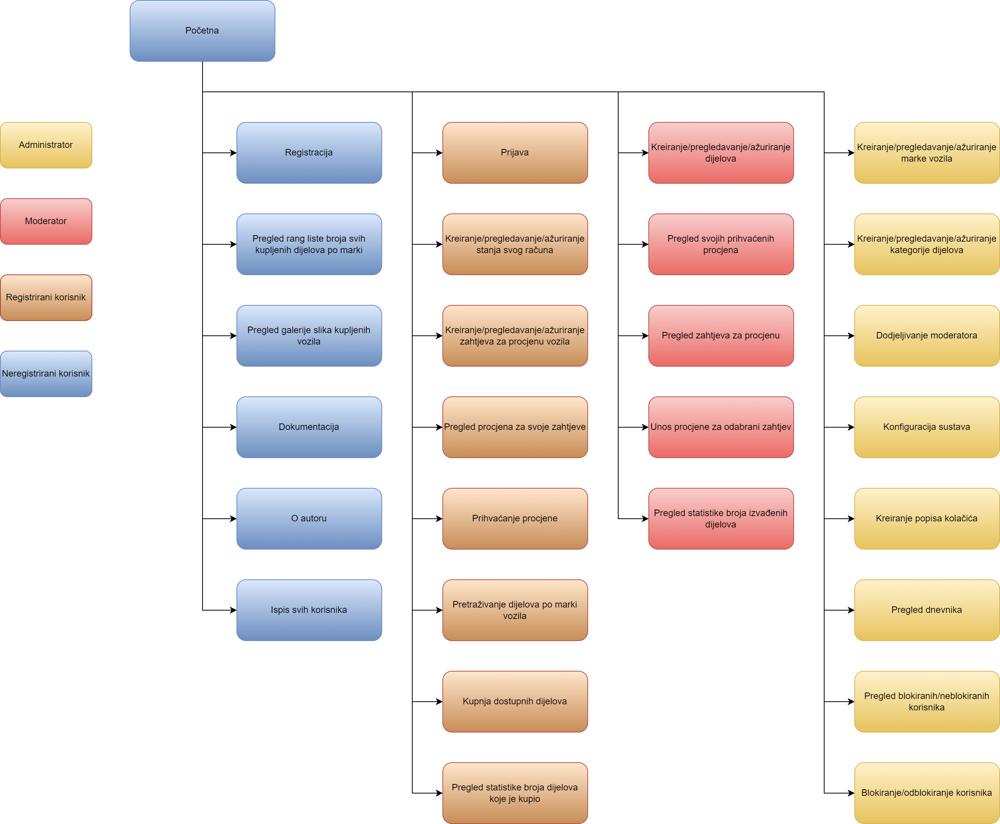
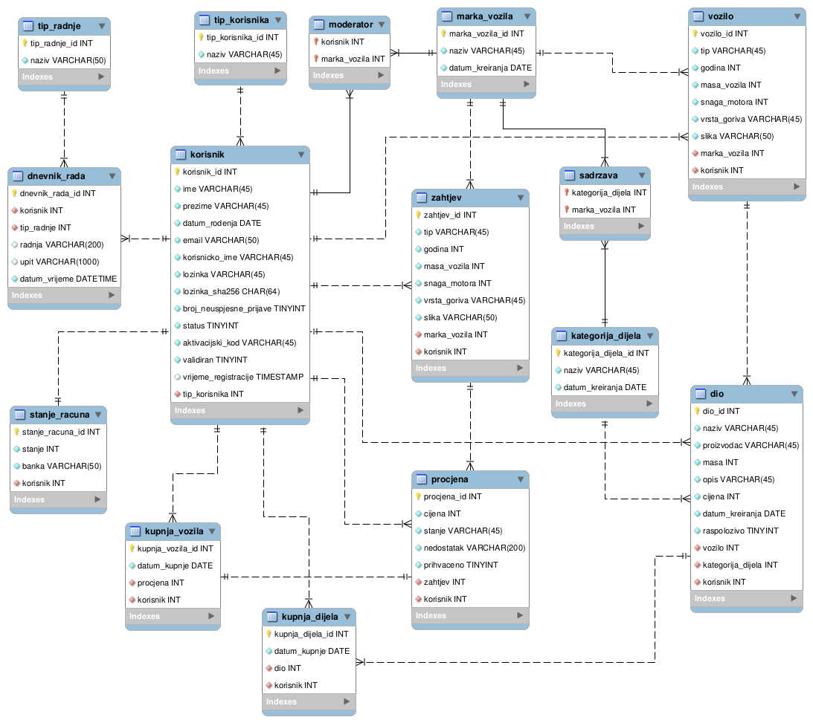

| Opis projektnog zadatka |
|---|
| Tema ovog projektnog zadatka je "Auto otpad". U projektu se pojavljuju 4 vrste korisnika, a to su: neregistrirani korisnik, registrirani korisnik, moderator te administrator. Administrator je tip korisnika koji ima najveće ovlasti dok neregistrirani korisnik ima najmanje ovlasti. Korisnici mogu kreirati, pregledavati te ažurirati razne kategorije poput marki vozila, kategorija dijelova, dijelova vozila, zahtjeva za procjene, stanja računa. Osim toga, imaju mogućnost kupovine dijelova vozila te prodaje vozila. |
| Opis projektnog rješenja |
|---|
| Kao što je navedeno u opisu projektnog zadatka, administrator ima najveće ovlasti. Njegove ovlasti su sljedeće: kreiranje/pregledavanje/ažuriranje marki vozila, dodjeljivanje moderatora odabranoj marki vozila, kreiranje/pregledavanje/ažuriranje kategorija dijelova, pregled dnevnika rada te sve funkcionalnosti koje imaju i ostali tipovi korisnika. Moderator ima sljedeće mogućnosti: kreiranje/pregledavanje/ažuriranje dijelova koje je izvadio iz kupljenog vozila, pregled popisa svojih prihvaćenih procjena, pregled zahtjeva za procjenu vozila, unos procjene za vozilo te sve funkcionalnosti koje imaju registrirani i neregistrirani korisnik. Registrirani korisnik ima sljedeće mogućnosti: kreiranje/pregledavanje/ažuriranje stanja svog računa, kreiranje/pregledavanje/ažuriranje zahtjeva za procjenu, pregled procjena za svoje zahtjeve, prihvaćanje procjene, pretraživanje dijelova po marki vozila, kupnja dijelova od moderatora, prijava u aplikaciju te sve funkcionalnosti koje ima i neregistrirani korisnik. Neregistrirani korisnik ima sljedeće mogućnosti: pregled rang liste broja kupljenih dijelova po marki, pregled galerije slika kupljenih vozila, registracija, pregled stranice "O autoru" te stranice "Dokumentacija projekta". |
| Dijagram slučajeva korištenja s ulogama (navigacijski dijagram) |
|---|
|  |
| Shema baze podataka (ERA model) |
|---|
|  |
| Popis i opis skripata i datoteka od kojih se sastoji projekt, mapa mjesta |
|---|
| Mapa "css": - mforjan.css: dizajn aplikacije Mapa "izvorne_datoteke": - mforjan.sql - mforjan_workbench.mwb - mforjan_workbench.mwb.bak - navigacijski.xml Mapa "materijali": - sadrži sve slike Mapa "obrasci": - prijava.php: prijava korisnika u aplikaciju - registracija.php: registracija korisnika - validiraj.php: validacija korisnika Mapa "privatno": - .htaccess: datoteka u kojoj se nalazi korisnik s istim korisničkim imenom i lozinkom kao i pristup do baze podataka - .htpasswd: datoteka u kojoj se nalazi generirana lozinka - korisnici.php: ispis svih korisnika "Source Files" - baza.class.php: klasa koja služi za spajanje na bazu, izvršavanja SQL upita te odspajanje s baze - blokiranjeKorisnika.php: administrator ima mogućnost blokiranja/odblokiranja korisnika - dijelovi.php: moderator ima mogućnost kreiranja/pregledavanja/ažuriranja dijelova koje je izvadio iz kupljenog vozila - dnevnik.class.php: klasa koja služi za unos informacija u dnevnik - dokumentacija.html: pregled dokumentacije projekta - galerija.php: neregistrirani korisnik ima mogućnost pregleda galerije slika kupljenih vozila - index.php: početna stranica aplikacije - kategorijeDijelova.php: administrator ima mogućnost kreiranja/pregledavanja/ažuriranja kategorija dijelova - kupnjaDijelova.php: registrirani korisnik ima mogućnost pretraživanja dijelova po marki vozila te kupnje dostupnih dijelova - markeVozila.php: administrator ima mogućnost kreiranja/pregledavanja/ažuriranja marke vozila te dodjeljivanje moderatora marki vozila - o_autoru.html: pregled informacija o autoru - pregledDnevnika.php: administrator ima mogućnost pregleda aktivnosti svih korisnika - pregledZahtjeva.php: moderator ima mogućnost pregleda zahtjeva za procjenu vozila te unosa procjene za vozilo - prihvaceneProcjene.php: moderator pregleda popis svojih prohvaćenih procjena s informacijama o vozilu - prodajaVozila.php: registrirani korisnik ima mogućnost pregleda procjena za svoje zahtjeva te može prihvatiti procjenu - rangLista.php: neregistrirani korisnik ima mogućnost pregleda broja svih kupljenih dijelova po marki vozila - sesija.class.php: klasa sesija koja služi za pokretanje i završavanje sesije - stanjeRacuna.php: registrirani korisnik ima mogućnost kreiranja/pregledavanja/ažuriranja stanja svog računa - zaglavlje.php: odjava korisnika iz aplikacije - zahtjevi.php: registrirani korisnik ima mogućnost kreiranja/pregledavanja/ažuriranja zahtjeva za procjenu vozila |
| Popis i opis korištenih tehnologija i alata |
|---|
| Netbeans IDE - alat u kojem je izrađen projekt MySQL Workbench - alat u kojem je dizajnirana baza podataka Terminal - web server za testiranje Filezilla - alat korišten za prijenos projekta na server phpMyAdmin - izrada SQL upita, spremanje podataka u tablice te njihov prikaz PHP - rad s bazom (prikaz podataka, SQL upiti, dohvaćanje podataka, pretraživanje podataka) |
| Popis i opis korištenih vanjskih izvora (moduli/biblioteke) i njihovo korištenje u skriptama |
|---|
| Google reCAPTCHA - provjera od automata (korišteno u skripti registracija.php) CSS za dizajn padajućeg izbornika - preuzeto sa stranice W3Schools meni, baza.class.php, dnevnik.class.php, sesija.class.php - preuzeto s materijala s nastave prijava.php, registracija.php, validiraj.php - preuzeto s vlastitog projekta |
| Opis završenosti projekta |
|---|
| Projekt je izrađen u postotku od otprilike 55%. |
| Popis uočenih problema u radu |
|---|
| Prilikom testiranja aplikacije nisu uočeni problemi. |